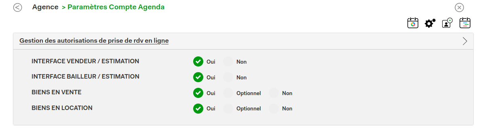

Le SDK permet d'afficher dans votre page le bouton de prise de rendez-vous AgendaSolomo pour le bien affiché.
Sa mise est place est très simple :
1. Inclure le script dans votre page
2. Lancer le script de la façon suivante : <script type="text/javascript">agenda_solomo(agence_id,reference_interne);</script>
où :
- "agence_id" est l'identifiant qui vous a été fourni lors de votre inscription
- "reference_interne" est égal à la référence passée lors de l'import du bien via le webservice AgendaSolomo (ou le numero de mandat si le bien a été importé par le webservice de Apimo)
Dans l'interface agendasolomo le bien doit disposer de l'autorisation de prise de rendez-vous.
